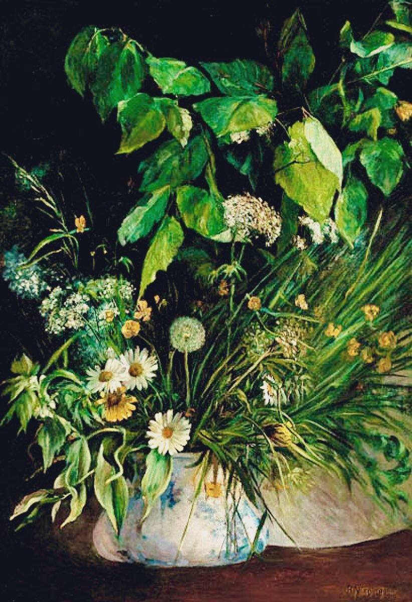

作品名 「花瓶に入ったデイジー、タンポポ、ブナの葉」
花言葉 「希望」「平和」「無邪気」「純潔」「美人」
デイジー
「希望」
花名のデイジー（Daisy）は、「day’s eye（デイズアイ）」（日の眼）が語源で、太陽の光がさすと花を開いて金色の花芯を見せ、夜や曇りの日には花をすぼめる性質にちなみます。日本には明治初期に渡来し、小さくてかわいらしい菊と形容され、雛菊（ヒナギク）と名づけられました。「希望」の花言葉は、光がさすと花を開く性質にちなみ付けられました。
花瓶に入ったデイジー、タンポポ、ブナの葉
ベルタ・ヴェークマン
ベルタ・ヴェークマンはドイツ系のデンマーク人の女性画家である。絵の訓練を受けたのは19歳になってからで、デンマークの画家、ヘルステッド、ブンチェン、ルンドから絵を学んだ。女性としては初めて、デンマーク王立美術アカデミーの教授となり、女性のための美術学校、"Tegne- og Kunstindustriskolen for Kvinder"の理事を務めた。デンマークの代表的画家としてシカゴ万国博覧会などに出展し、1892年にデンマーク王室が、科学者や芸術家におくる勲章を女性としてはじめて受勲した。
| 作品名 | 花瓶に入ったデイジー、タンポポ、ブナの葉 |
| 作者 | ベルタ・ヴェークマン |
| 制作年 | 1847〜1926年 |
| 種類 | キャンバス・油彩 |
| 寸法 | 89×61cm |
| 所蔵 | 不明 |